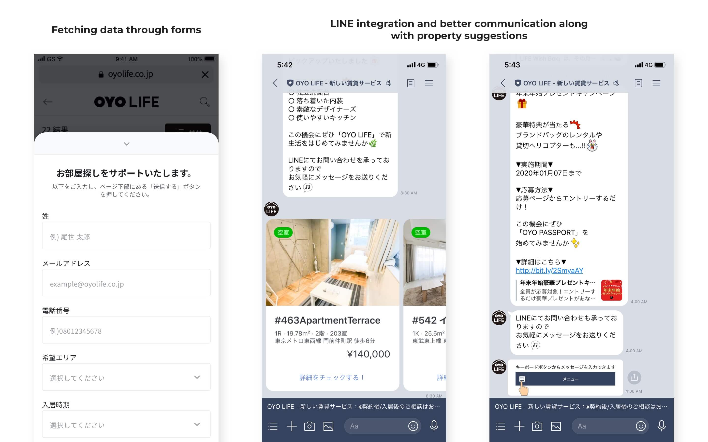
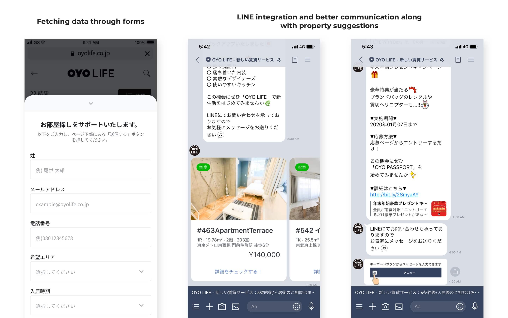
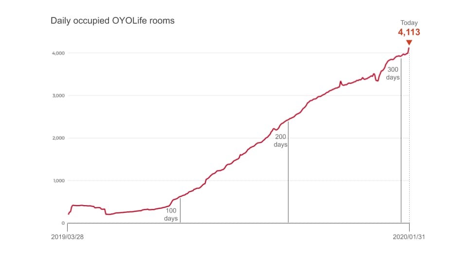

OYO Life Japan | Product Design Journey
What's OYO Life:
In March'19, OYO in collaboration with Yahoo! Japan, launched apartment rental service called OYO Life with over 1,000 residential units across Tokyo (6,500 in Dec'19). It aims to provide hassle-free, affordable and furnished/unfurnished rental apartments to home seekers, thus doing away with the need for a hefty security deposit, key money, and introduction fees.
My Role:
Product design for consumer web and internal tools
Duration:
May'19 to Dec'19
Disclaimer: The project was done during my tenure at OYO Rooms. To comply with my non-disclosure agreement, I have omitted and obfuscated confidential information in this case study. The information in this case study is my own and does not necessarily reflect the views of OYO Rooms/Oravel Stays Pvt Ltd.
1. Redesigning the home page
Problem:
The funnel from the homepage to the listing page was weak. With the introduction of the OYO Life link on Yahoo Japan page, we were expecting an influx of first-time visitors and wanted to explain key benefits, assist the user with the search of a new apartment.
What OYO Life Japan homepage used to look like:
Existing homepage done by an external agency
Few numbers which were crucial:
1. 70% of Japanese phone market is Apple iPhone.
2. 60% of traffic on website was recorded on mobile.
Solution:
1. Improved location suggestions based on user location and important stations.
2. Better search capabilities keeping in mind domestic and international audience.
3. Product shoot for improving the facade of the website. A big shout out to the marketing and product team who worked along with external agency for this.
4. Overhaul of all components with new design language.
3. Establishing brand values through precise communication in the hero banner and succeeding sections.
Result:
After the launch of new homepage, we saw a conversion lift of 3.6% and bounce rate dropped by 30%.

2. Online Contracting
Problem:
The traditional way of renting in Japan requires you to fill a lot of paperwork, deposit 3 months of key money which isn't refundable and a recommendation from local friend/acquaintance.
Solution:
My fellow designer Ms. Chin-wen Lee, lead the efforts of redesigning the booking flow.
With the redesign, we empowered the customer to make a contracts online and move-in immediately.
3. Focus on offline/indirect conversion
Problem:
OYO Life being a new service was driving a majority of its bookings from channels like customer support, revenue campaigns, on-ground sales. But in order to drive these channels, we required more leads.
Solution:
1. Lead Generation through "Get Assistance Forms"
2. Fresh-chat integration
3. Multi-channel support: Call centre, LINE support
 

Overtime progression of bookings till Jan 2020:
4. Detailing of properties
Problem:
1. Images / Floor plans not available
2. Amenities, images, the description was not too detailed.
Solution:
1. Tech and production collaborated to push more details, amenities, and images of the property.
2. Introduction of room selection at property level to provide more options to the user. e.g. Initially a building with 20 similar rooms had one sample room listed. With the new feature, the user is able to select any available room in the property.
5. Information and Lead Management Tool
Problem:
In order to push more details and provide the customer with more property options, it was necessary to be able to manage everything internally in an efficient manner.
Solution:
For lead management, we created a tool called "Quark" which enabled us to create property leads, deal creation (with assistance from another tool called "Orbis"), partner payments, contracting and train station information.
Another tool built was "Nucleus" which helped us manage property information like building info (location, train station, building amenities, age, structure, etc), apartment level info (images, amenities, description, etc), key management ( add key info, change pin, key location, etc).
6. Competitor Analysis
To this date a lot of rental space in Japan is being driven by offline documentation with assistive online search capabilities.
Few of my favourite things about the competitors are:
Suumo: Search and discovery
Liful Homes: Listing
At-home: Marketing and placement
Chintai: Detailing out the properties
7. User Interviews
We regularly conducted user interviews at regular intervals with:
1. Potential customer
2. In-stay and repetitive customer
3. Check-out customer
Interviews were driven by:
Mr. Tomoya Ito, Ms. Yoshiko Mizoguchi and Mr. Kotaro Harada

This article is still going through modifications. Reach out to me if you need clarity on anything.
Thank you.
Reach out to me